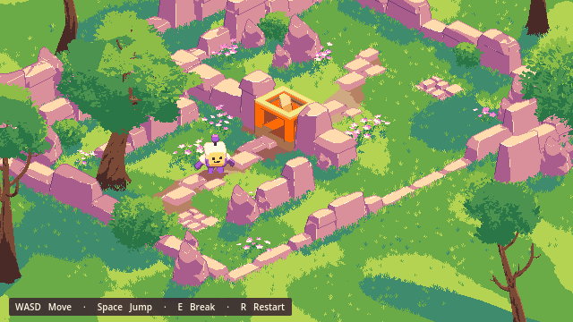
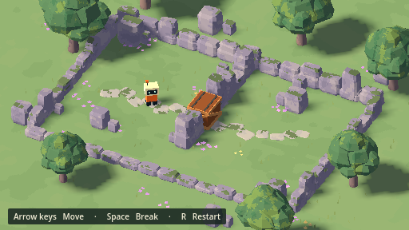
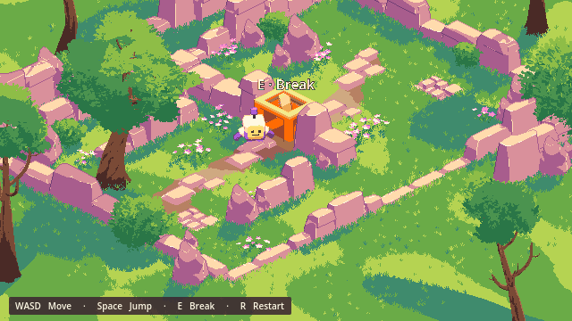

From a dark grey test yard to a cozy pixel-art meadow. Drag any picture to compare before and after. Every number on this page was measured in the game.


First sketchNow · 20 NovThe same spot in the yard after every step. Tap a frame to jump to its layer.
The reference picture was not copied. It was taken apart first: what each layer is, how the artist makes it, and why it is there. Then one layer was built at a time.
The reference was a ruins frame by another pixel artist. It is not shown here: only its method was studied, and the colours stay this game's own (pink stone, golden lawn, orange crate).
Left side of each picture = before the step. Right side = after. Open "Zoom in" for a 4× close-up.
Everything on screen has a job: tell you where to go, what you can touch, or make the place feel real. Tap a number.

Pressing E at the crate starts eight small effects on one clock. Each has a job. Together they make one hit feel strong. The path opens on the very first frame, before any effect plays.